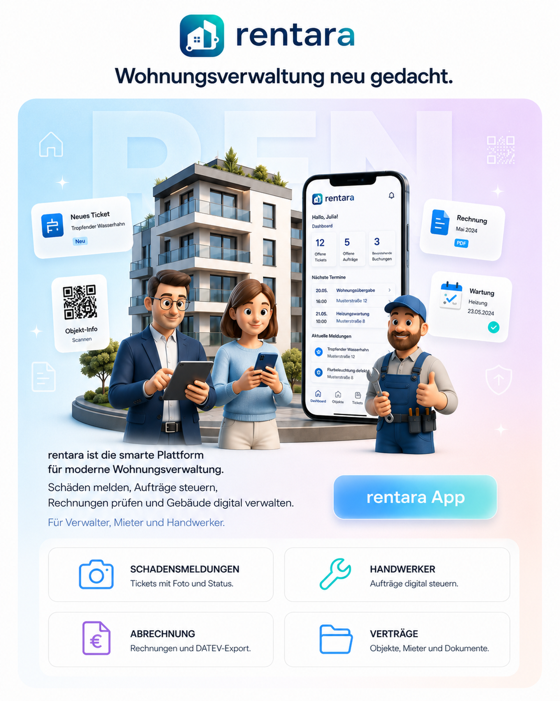

Für Verwaltungen
Tickets, Objekte, Verträge, Rechnungen und Nebenkosten laufen in einem zentralen System zusammen.
Das digitale Betriebssystem für moderne Wohnungsverwaltung. Rentara bündelt Schadensmeldungen, Tickets, Handwerker-Aufträge, Rechnungsprüfung, Vertragsdaten und Nebenkostenabrechnung in einer klaren Plattform.
Projekt anfragen →
Rentara ist eine vollständig integrierte Plattform für Hausverwaltungen, Wohnungsbaugesellschaften und Immobilienunternehmen. Sie digitalisiert zentrale Prozesse der Wohnungsverwaltung - von der Schadensmeldung über die Handwerker-Beauftragung bis hin zur Rechnungsprüfung, Vertragsverwaltung und Nebenkostenabrechnung.
Statt einzelne Tools, E-Mails, Excel-Listen und Papierprozesse miteinander zu kombinieren, bündelt Rentara alle Abläufe in einer einzigen App für Verwalter, Mieter und Handwerker. Mieter können Schäden direkt per App melden, inklusive Foto, Beschreibung und automatischer Wohnungszuordnung.
Jede Meldung landet sofort im zentralen Ticket-System. Verwalter sehen offene, laufende und erledigte Fälle in einem übersichtlichen Dashboard, können Tickets priorisieren, kommentieren und direkt passenden Handwerkern zuweisen. Mieter werden bei jedem Statuswechsel automatisch informiert.
Handwerker erhalten neue Aufträge direkt in ihrer App, schlagen Termine vor, geben Statusupdates und laden Rechnungen als PDF hoch. Eingereichte Rechnungen werden dem passenden Ticket zugeordnet, geprüft, freigegeben oder mit Begründung abgelehnt. Nach der Freigabe lassen sich Rechnungsdaten für die Buchhaltung exportieren, zum Beispiel als DATEV-konforme CSV oder über ERP-Webhooks.
Rentara bildet Gebäude, Wohnungen, Mietverhältnisse, Vertragsdaten, Geräte, Sensoren und relevante Dokumente digital ab. Nebenkostenabrechnungen können direkt aus der Plattform vorbereitet, als PDF erzeugt und digital zugestellt werden.
Dazu kommen Digital Twin, Wartungsmanagement, QR-Code-Onboarding, White-Label-Fähigkeit und KI-Unterstützung für Ticket-Kategorisierung, Dringlichkeitserkennung, Handwerker-Vorschläge, Texterkennung und Rechnungsprüfung.
Tickets, Objekte, Verträge, Rechnungen und Nebenkosten laufen in einem zentralen System zusammen.
Schäden melden, Status verfolgen und wichtige Informationen direkt über die App erhalten.
Aufträge empfangen, Termine abstimmen, Status melden und Rechnungen digital einreichen.